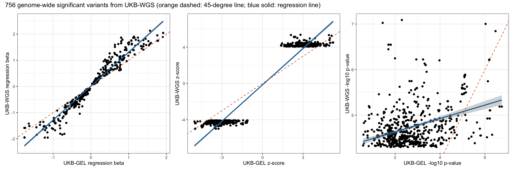
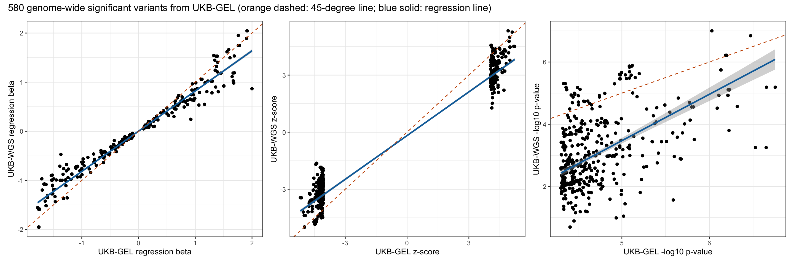
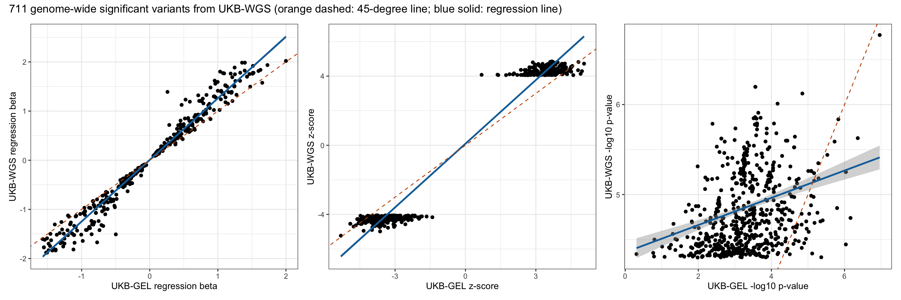
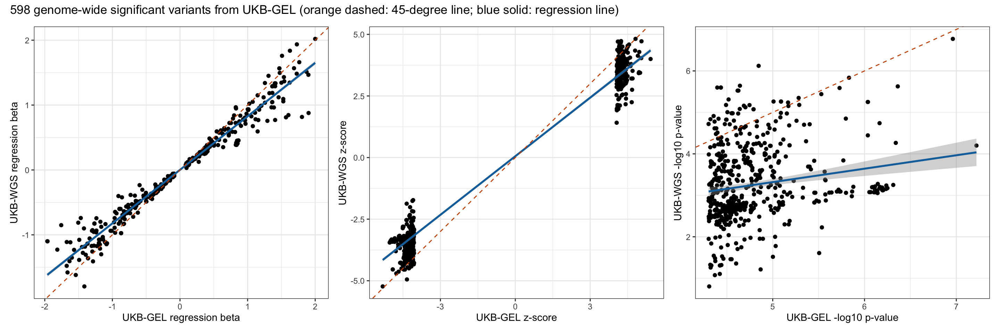

Last updated: 2025-07-27
Checks: 7 0
Knit directory: scratch/
This reproducible R Markdown analysis was created with workflowr (version 1.7.1). The Checks tab describes the reproducibility checks that were applied when the results were created. The Past versions tab lists the development history.
Great! Since the R Markdown file has been committed to the Git repository, you know the exact version of the code that produced these results.
Great job! The global environment was empty. Objects defined in the global environment can affect the analysis in your R Markdown file in unknown ways. For reproduciblity it’s best to always run the code in an empty environment.
The command set.seed(20250402) was run prior to running
the code in the R Markdown file. Setting a seed ensures that any results
that rely on randomness, e.g. subsampling or permutations, are
reproducible.
Great job! Recording the operating system, R version, and package versions is critical for reproducibility.
Nice! There were no cached chunks for this analysis, so you can be confident that you successfully produced the results during this run.
Great job! Using relative paths to the files within your workflowr project makes it easier to run your code on other machines.
Great! You are using Git for version control. Tracking code development and connecting the code version to the results is critical for reproducibility.
The results in this page were generated with repository version 36ea3b5. See the Past versions tab to see a history of the changes made to the R Markdown and HTML files.
Note that you need to be careful to ensure that all relevant files for
the analysis have been committed to Git prior to generating the results
(you can use wflow_publish or
wflow_git_commit). workflowr only checks the R Markdown
file, but you know if there are other scripts or data files that it
depends on. Below is the status of the Git repository when the results
were generated:
Ignored files:
Ignored: .DS_Store
Ignored: .Rhistory
Ignored: .Rproj.user/
Note that any generated files, e.g. HTML, png, CSS, etc., are not included in this status report because it is ok for generated content to have uncommitted changes.
These are the previous versions of the repository in which changes were
made to the R Markdown
(analysis/compare_wgs_with_gel_b01_rep.Rmd) and HTML
(docs/compare_wgs_with_gel_b01_rep.html) files. If you’ve
configured a remote Git repository (see ?wflow_git_remote),
click on the hyperlinks in the table below to view the files as they
were in that past version.
| File | Version | Author | Date | Message |
|---|---|---|---|---|
| Rmd | 36ea3b5 | Xiang Zhu | 2025-07-27 | compare wgs-based xiangzhu/brain2gene#14 with gel-based xiangzhu/brain2gene#2 results in replication |
Number of rows in the new data frame: 21570367 Number of rows in the old data frame: 16611142 Number of genome-wide significant variants in the new GWAS: 0 Number of genome-wide significant variants in the old GWAS: 0 Number of GWAS loci in the new GWAS: 0 Number of GWAS loci in the old GWAS: 0 Relaxed genome-wide significant threshold: 4.30103 Total number of rows after joining two data frames: 16394778 Pearson correlation between new_A1FREQ in new and old_A1FREQ in old:
Estimate = 0.99989338 , 95% CI = [ 0.99989328 , 0.99989349 ]
Regression coefficients for new_A1FREQ (new ~ old):
Estimate Std. Error t value Pr(>|t|)
(Intercept) 3.195893e-05 9.871525e-07 32.37487 6.304224e-230
x 9.998064e-01 3.606005e-06 277261.49298 0.000000e+00
Pearson correlation between new_BETA in new and old_BETA in old:
Estimate = 0.71326451 , 95% CI = [ 0.71302664 , 0.71350222 ]
Regression coefficients for new_BETA (new ~ old):
Estimate Std. Error t value Pr(>|t|)
(Intercept) 0.0001004725 0.0000323263 3.108074 0.001883111
x 0.7407740791 0.0001797775 4120.504824 0.000000000
Pearson correlation between new_SE in new and old_SE in old:
Estimate = 0.99366002 , 95% CI = [ 0.9936539 , 0.99366613 ]
Regression coefficients for new_SE (new ~ old):
Estimate Std. Error t value Pr(>|t|)
(Intercept) 0.001472467 5.194318e-06 283.4764 0
x 1.000480405 2.795681e-05 35786.6462 0
Pearson correlation between new_CHISQ in new and old_CHISQ in old:
Estimate = 0.52858838 , 95% CI = [ 0.52823949 , 0.5289371 ]
Regression coefficients for new_CHISQ (new ~ old):
Estimate Std. Error t value Pr(>|t|)
(Intercept) 0.4670420 0.0003599986 1297.344 0
x 0.5588863 0.0002216657 2521.302 0
Pearson correlation between new_LOG10P in new and old_LOG10P in old:
Estimate = 0.52126605 , 95% CI = [ 0.52091343 , 0.52161849 ]
Regression coefficients for new_LOG10P (new ~ old):
Estimate Std. Error t value Pr(>|t|)
(Intercept) 0.2055133 0.0001289586 1593.637 0
x 0.5445845 0.0002201926 2473.218 0
Pearson correlation between new_ZSCORE in new and old_ZSCORE in old:
Estimate = 0.72758695 , 95% CI = [ 0.72735906 , 0.72781467 ]
Regression coefficients for new_ZSCORE (new ~ old):
Estimate Std. Error t value Pr(>|t|)
(Intercept) 0.001011887 0.0001687160 5.997576 2.002882e-09
x 0.747844193 0.0001741435 4294.412249 0.000000e+00Pearson correlation between new_A1FREQ in new and old_A1FREQ in old:
Estimate = 0.99999708 , 95% CI = [ 0.99999663 , 0.99999747 ]
Regression coefficients for new_A1FREQ (new ~ old):
Estimate Std. Error t value Pr(>|t|)
(Intercept) 0.0000750716 3.607031e-05 2.081258 0.03774721
x 0.9996171899 8.800342e-05 11358.844745 0.00000000
Pearson correlation between new_BETA in new and old_BETA in old:
Estimate = 0.96500469 , 95% CI = [ 0.9597391 , 0.9695923 ]
Regression coefficients for new_BETA (new ~ old):
Estimate Std. Error t value Pr(>|t|)
(Intercept) 0.01137814 0.007533903 1.510259 0.1313964
x 1.29549719 0.012820592 101.048158 0.0000000
Pearson correlation between new_SE in new and old_SE in old:
Estimate = 0.99535008 , 95% CI = [ 0.99463796 , 0.99596781 ]
Regression coefficients for new_SE (new ~ old):
Estimate Std. Error t value Pr(>|t|)
(Intercept) -0.000377871 0.0006360513 -0.594089 0.5526308
x 1.028244669 0.0036238267 283.745542 0.0000000
Pearson correlation between new_CHISQ in new and old_CHISQ in old:
Estimate = 0.39091491 , 95% CI = [ 0.32877526 , 0.44968437 ]
Regression coefficients for new_CHISQ (new ~ old):
Estimate Std. Error t value Pr(>|t|)
(Intercept) 16.8797679 0.14247126 118.47841 0.000000e+00
x 0.1535822 0.01316929 11.66215 5.197638e-29
Pearson correlation between new_LOG10P in new and old_LOG10P in old:
Estimate = 0.38670987 , 95% CI = [ 0.3243496 , 0.44572338 ]
Regression coefficients for new_LOG10P (new ~ old):
Estimate Std. Error t value Pr(>|t|)
(Intercept) 4.3406020 0.03736679 116.1620 0.00000e+00
x 0.1468632 0.01275463 11.5145 2.24473e-28
Pearson correlation between new_ZSCORE in new and old_ZSCORE in old:
Estimate = 0.96917319 , 95% CI = [ 0.96452349 , 0.97322179 ]
Regression coefficients for new_ZSCORE (new ~ old):
Estimate Std. Error t value Pr(>|t|)
(Intercept) -0.1512598 0.03817894 -3.961863 8.142409e-05
x 1.3376959 0.01238445 108.014195 0.000000e+00Pearson correlation between new_A1FREQ in new and old_A1FREQ in old:
Estimate = 0.99999367 , 95% CI = [ 0.99999254 , 0.99999462 ]
Regression coefficients for new_A1FREQ (new ~ old):
Estimate Std. Error t value Pr(>|t|)
(Intercept) 0.0001348005 0.0000589854 2.28532 0.02265531
x 0.9999056514 0.0001480298 6754.75891 0.00000000
Pearson correlation between new_BETA in new and old_BETA in old:
Estimate = 0.97774626 , 95% CI = [ 0.97385316 , 0.98106527 ]
Regression coefficients for new_BETA (new ~ old):
Estimate Std. Error t value Pr(>|t|)
(Intercept) 0.001922741 0.005832599 0.3296542 0.7417807
x 0.818554517 0.007305405 112.0477956 0.0000000
Pearson correlation between new_SE in new and old_SE in old:
Estimate = 0.99515046 , 95% CI = [ 0.99429329 , 0.99587915 ]
Regression coefficients for new_SE (new ~ old):
Estimate Std. Error t value Pr(>|t|)
(Intercept) -0.001029305 0.0007689503 -1.338584 0.1812323
x 1.032447899 0.0042447635 243.228605 0.0000000
Pearson correlation between new_CHISQ in new and old_CHISQ in old:
Estimate = 0.62372013 , 95% CI = [ 0.57131752 , 0.67105797 ]
Regression coefficients for new_CHISQ (new ~ old):
Estimate Std. Error t value Pr(>|t|)
(Intercept) -15.504783 1.3884043 -11.16734 2.353745e-26
x 1.456641 0.0759294 19.18415 7.674249e-64
Pearson correlation between new_LOG10P in new and old_LOG10P in old:
Estimate = 0.62145027 , 95% CI = [ 0.5688155 , 0.66901547 ]
Regression coefficients for new_LOG10P (new ~ old):
Estimate Std. Error t value Pr(>|t|)
(Intercept) -3.980485 0.36859196 -10.79917 6.862179e-25
x 1.490463 0.07815632 19.07028 2.923340e-63
Pearson correlation between new_ZSCORE in new and old_ZSCORE in old:
Estimate = 0.98259861 , 95% CI = [ 0.9795456 , 0.98519933 ]
Regression coefficients for new_ZSCORE (new ~ old):
Estimate Std. Error t value Pr(>|t|)
(Intercept) -0.1794116 0.025663076 -6.99104 7.556412e-12
x 0.7660020 0.006022811 127.18346 0.000000e+00 UKB-WGS p < 5e-8 UKB-WGS p >= 5e-8
UKB-GEL p < 5e-8 82 498
UKB-GEL p >= 5e-8 674 16393524
Fisher's Exact Test for Count Data
data: contingency_table
p-value < 2.2e-16
alternative hypothesis: true odds ratio is not equal to 1
95 percent confidence interval:
3062.43 8192.00
sample estimates:
odds ratio
3687.748 
Number of rows in the new data frame: 21720742 Number of rows in the old data frame: 16715273 Number of genome-wide significant variants in the new GWAS: 0 Number of genome-wide significant variants in the old GWAS: 0 Number of GWAS loci in the new GWAS: 0 Number of GWAS loci in the old GWAS: 0 Relaxed genome-wide significant threshold: 4.30103 Total number of rows after joining two data frames: 16494548 Pearson correlation between new_A1FREQ in new and old_A1FREQ in old:
Estimate = 0.99989261 , 95% CI = [ 0.99989251 , 0.99989271 ]
Regression coefficients for new_A1FREQ (new ~ old):
Estimate Std. Error t value Pr(>|t|)
(Intercept) 3.221292e-05 9.850602e-07 32.70147 1.514543e-234
x 9.998007e-01 3.608076e-06 277100.80889 0.000000e+00
Pearson correlation between new_BETA in new and old_BETA in old:
Estimate = 0.79850038 , 95% CI = [ 0.79832543 , 0.7986752 ]
Regression coefficients for new_BETA (new ~ old):
Estimate Std. Error t value Pr(>|t|)
(Intercept) -8.166994e-05 2.791353e-05 -2.925819 0.003435513
x 8.156733e-01 1.514130e-04 5387.073866 0.000000000
Pearson correlation between new_SE in new and old_SE in old:
Estimate = 0.9936718 , 95% CI = [ 0.99366571 , 0.99367788 ]
Regression coefficients for new_SE (new ~ old):
Estimate Std. Error t value Pr(>|t|)
(Intercept) 0.001418217 5.210877e-06 272.1647 0
x 0.994466812 2.767860e-05 35929.0845 0
Pearson correlation between new_CHISQ in new and old_CHISQ in old:
Estimate = 0.66957244 , 95% CI = [ 0.66930612 , 0.66983858 ]
Regression coefficients for new_CHISQ (new ~ old):
Estimate Std. Error t value Pr(>|t|)
(Intercept) 0.3331471 0.0003170146 1050.889 0
x 0.6889026 0.0001881615 3661.230 0
Pearson correlation between new_LOG10P in new and old_LOG10P in old:
Estimate = 0.66102686 , 95% CI = [ 0.66075506 , 0.6612985 ]
Regression coefficients for new_LOG10P (new ~ old):
Estimate Std. Error t value Pr(>|t|)
(Intercept) 0.1472516 0.0001136517 1295.640 0
x 0.6763007 0.0001890260 3577.819 0
Pearson correlation between new_ZSCORE in new and old_ZSCORE in old:
Estimate = 0.81526497 , 95% CI = [ 0.81510308 , 0.81542674 ]
Regression coefficients for new_ZSCORE (new ~ old):
Estimate Std. Error t value Pr(>|t|)
(Intercept) 0.001009311 0.0001427042 7.072749 1.519004e-12
x 0.828287779 0.0001448628 5717.739029 0.000000e+00Pearson correlation between new_A1FREQ in new and old_A1FREQ in old:
Estimate = 0.99999538 , 95% CI = [ 0.99999465 , 0.99999602 ]
Regression coefficients for new_A1FREQ (new ~ old):
Estimate Std. Error t value Pr(>|t|)
(Intercept) 4.816468e-05 2.896263e-05 1.662994 0.0967555
x 9.997168e-01 1.140708e-04 8763.999483 0.0000000
Pearson correlation between new_BETA in new and old_BETA in old:
Estimate = 0.98493559 , 95% CI = [ 0.98256534 , 0.98698572 ]
Regression coefficients for new_BETA (new ~ old):
Estimate Std. Error t value Pr(>|t|)
(Intercept) 0.006792176 0.005157521 1.316946 0.1882823
x 1.253246637 0.008263325 151.663724 0.0000000
Pearson correlation between new_SE in new and old_SE in old:
Estimate = 0.99513759 , 95% CI = [ 0.99436798 , 0.99580225 ]
Regression coefficients for new_SE (new ~ old):
Estimate Std. Error t value Pr(>|t|)
(Intercept) 0.0003092408 0.0006857424 0.4509576 0.652158
x 1.0058531442 0.0037388721 269.0258263 0.000000
Pearson correlation between new_CHISQ in new and old_CHISQ in old:
Estimate = 0.29871835 , 95% CI = [ 0.23024848 , 0.36424515 ]
Regression coefficients for new_CHISQ (new ~ old):
Estimate Std. Error t value Pr(>|t|)
(Intercept) 17.0149795 0.2360874 72.070672 0.000000e+00
x 0.1544748 0.0185343 8.334534 4.028259e-16
Pearson correlation between new_LOG10P in new and old_LOG10P in old:
Estimate = 0.30112018 , 95% CI = [ 0.23274627 , 0.36653201 ]
Regression coefficients for new_LOG10P (new ~ old):
Estimate Std. Error t value Pr(>|t|)
(Intercept) 4.3586461 0.06156615 70.79615 9.881313e-324
x 0.1513532 0.01800067 8.40820 2.280390e-16
Pearson correlation between new_ZSCORE in new and old_ZSCORE in old:
Estimate = 0.98857828 , 95% CI = [ 0.98677736 , 0.99013514 ]
Regression coefficients for new_ZSCORE (new ~ old):
Estimate Std. Error t value Pr(>|t|)
(Intercept) 0.09176619 0.024537067 3.739901 0.0001989544
x 1.22788673 0.007030095 174.661467 0.0000000000Pearson correlation between new_A1FREQ in new and old_A1FREQ in old:
Estimate = 0.99730735 , 95% CI = [ 0.99683867 , 0.99770663 ]
Regression coefficients for new_A1FREQ (new ~ old):
Estimate Std. Error t value Pr(>|t|)
(Intercept) 0.0006561121 0.0007221865 0.9085079 0.3639772
x 0.9913493860 0.0029859799 332.0013539 0.0000000
Pearson correlation between new_BETA in new and old_BETA in old:
Estimate = 0.97876632 , 95% CI = [ 0.97511063 , 0.98188999 ]
Regression coefficients for new_BETA (new ~ old):
Estimate Std. Error t value Pr(>|t|)
(Intercept) 0.001767748 0.005219475 0.3386831 0.7349677
x 0.824709259 0.007074710 116.5714596 0.0000000
Pearson correlation between new_SE in new and old_SE in old:
Estimate = 0.99497363 , 95% CI = [ 0.99409995 , 0.99571822 ]
Regression coefficients for new_SE (new ~ old):
Estimate Std. Error t value Pr(>|t|)
(Intercept) -0.0001083399 0.0007192039 -0.1506386 0.8803118
x 1.0180518342 0.0041969217 242.5710833 0.0000000
Pearson correlation between new_CHISQ in new and old_CHISQ in old:
Estimate = 0.18791756 , 95% CI = [ 0.10938748 , 0.26411636 ]
Regression coefficients for new_CHISQ (new ~ old):
Estimate Std. Error t value Pr(>|t|)
(Intercept) 6.1403393 1.25975883 4.874218 1.402511e-06
x 0.3119023 0.06677614 4.670865 3.709800e-06
Pearson correlation between new_LOG10P in new and old_LOG10P in old:
Estimate = 0.18979235 , 95% CI = [ 0.11130794 , 0.26592395 ]
Regression coefficients for new_LOG10P (new ~ old):
Estimate Std. Error t value Pr(>|t|)
(Intercept) 1.700704 0.33239974 5.116442 4.204832e-07
x 0.323590 0.06856888 4.719197 2.953511e-06
Pearson correlation between new_ZSCORE in new and old_ZSCORE in old:
Estimate = 0.9859538 , 95% CI = [ 0.98352524 , 0.98802653 ]
Regression coefficients for new_ZSCORE (new ~ old):
Estimate Std. Error t value Pr(>|t|)
(Intercept) 0.05392778 0.023805081 2.26539 0.02384683
x 0.79296569 0.005502229 144.11718 0.00000000 UKB-WGS p < 5e-8 UKB-WGS p >= 5e-8
UKB-GEL p < 5e-8 80 518
UKB-GEL p >= 5e-8 631 16493319
Fisher's Exact Test for Count Data
data: contingency_table
p-value < 2.2e-16
alternative hypothesis: true odds ratio is not equal to 1
95 percent confidence interval:
3062.43 8192.00
sample estimates:
odds ratio
3669.402 
R version 4.5.1 (2025-06-13)
Platform: aarch64-apple-darwin20
Running under: macOS Sequoia 15.5
Matrix products: default
BLAS: /Library/Frameworks/R.framework/Versions/4.5-arm64/Resources/lib/libRblas.0.dylib
LAPACK: /Library/Frameworks/R.framework/Versions/4.5-arm64/Resources/lib/libRlapack.dylib; LAPACK version 3.12.1
locale:
[1] en_US.UTF-8/en_US.UTF-8/en_US.UTF-8/C/en_US.UTF-8/en_US.UTF-8
time zone: America/Los_Angeles
tzcode source: internal
attached base packages:
[1] stats graphics grDevices utils datasets methods base
other attached packages:
[1] xzTools_0.0.0.9000 patchwork_1.3.1 ggplot2_3.5.2 dplyr_1.1.4
[5] data.table_1.17.8 workflowr_1.7.1
loaded via a namespace (and not attached):
[1] sass_0.4.10 generics_0.1.4 lattice_0.22-7 stringi_1.8.7
[5] digest_0.6.37 magrittr_2.0.3 evaluate_1.0.4 grid_4.5.1
[9] RColorBrewer_1.1-3 fastmap_1.2.0 Matrix_1.7-3 R.oo_1.27.1
[13] rprojroot_2.0.4 jsonlite_2.0.0 processx_3.8.6 R.utils_2.13.0
[17] whisker_0.4.1 ps_1.9.1 promises_1.3.3 httr_1.4.7
[21] mgcv_1.9-3 scales_1.4.0 jquerylib_0.1.4 cli_3.6.5
[25] rlang_1.1.6 R.methodsS3_1.8.2 splines_4.5.1 withr_3.0.2
[29] cachem_1.1.0 yaml_2.3.10 tools_4.5.1 httpuv_1.6.16
[33] vctrs_0.6.5 R6_2.6.1 lifecycle_1.0.4 git2r_0.36.2
[37] stringr_1.5.1 fs_1.6.6 pkgconfig_2.0.3 callr_3.7.6
[41] pillar_1.11.0 bslib_0.9.0 later_1.4.2 gtable_0.3.6
[45] glue_1.8.0 Rcpp_1.1.0 xfun_0.52 tibble_3.3.0
[49] tidyselect_1.2.1 rstudioapi_0.17.1 knitr_1.50 farver_2.1.2
[53] nlme_3.1-168 htmltools_0.5.8.1 labeling_0.4.3 rmarkdown_2.29
[57] compiler_4.5.1 getPass_0.2-4